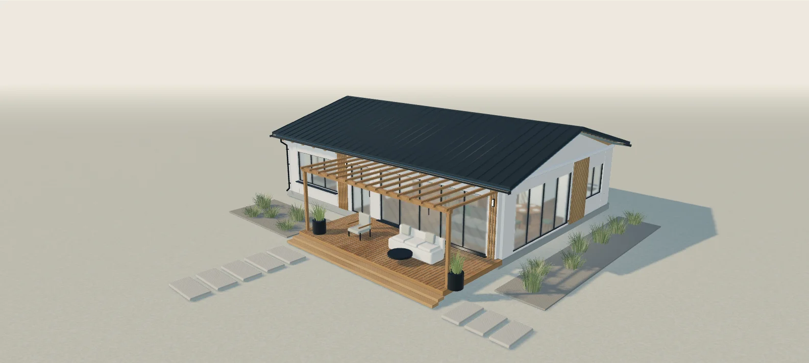

Кнопка перенесёт вас в свободную точку комнаты. Дальше можно ходить самостоятельно; это не анимация маршрута через дом.
ЧАСТНЫЕ ДОМА · СТАВРОПОЛЬСКИЙ КРАЙ
Дом, который
понятен до
строительства.
Посмотрите, как может жить ваша семья. Загляните внутрь, разберите дом на слои и выберите материалы с пониманием их особенностей.
Начинаем с одного архитектурного эскиза. Его можно обсудить и адаптировать; это не описание построенного объекта.

ДОМ 01 · КОНЦЕПЦИЯс террасойВнешний вид и планировка для обсуждения
01 / ОТТАЛКИВАЕМСЯ ОТ ВАШЕЙ ЖИЗНИ
Для кого
будет этот дом?
Исходная идея — дом для семьи из 3–4 человек. Расскажите о своих пожеланиях: они помогут обсудить планировку и изменения.
Сейчас рассматриваем этот эскиз. Пожелания записываются к обсуждению и не перестраивают комнаты автоматически.
ДОМ 01 / ПЛАНИРОВКА ВАШЕЙ ЖИЗНИ
Найдём место
для каждого.
Нажмите на комнату. Начните со схемы, а затем загляните внутрь.
ОДИН ЭТАЖ · ДОМ 01Схема для обсуждения
Выбор комнаты меняет только просмотр. Все восемь помещений доступны кнопками ниже.
ОБСУДИМ ВМЕСТЕ
На телефоне подробная 3D-модель загружается по кнопке.
Что важно вашей семье
Сопоставляем пожелания с этим эскизом. Перепланировка не выполняется автоматически.
Границы, мебель и перегородки показаны по текущей модели. Это архитектурный эскиз: размеры, пригодность для семьи и доступность требуют проверки со специалистом.
02 / ИЗУЧАЕМ ЭТОТ ЖЕ ДОМ
Откройте больше,
чем красивый фасад.
Посмотрите дом снаружи, раскройте его устройство или зайдите внутрь. На телефоне подробное 3D загружается по кнопке.
УЧЕБНЫЙ УЧАСТОК В ЭТОМ ДОМЕМатериал пока не выбранБез утверждённых толщин и состава
ИСХОДНЫЙ ВИД ЭСКИЗАИсходная отделка эскизаВнешний вид · система требует согласования
ИСХОДНЫЙ ВИД ЭСКИЗАФальцевая стальная кровляВнешний вид · состав требует согласования
ИЗ ЗАМЫСЛА — В ДОМ01 / 07Из замысла — в дом
Начинаем с предложенной планировки.
ВНУТРИ ДОМАКухня-гостинаяПроведите по изображению, чтобы осмотретьсяТёплый современный
Художественная последовательность на основе этого эскиза. Не технологическая карта строительных работ.
Один интерьер — разная атмосфераДневной свет
Мягкий свет у окон и светлое дневное небо.
Художественное освещение для просмотра. Это не расчёт освещённости или инсоляции.Что за наружной отделкой?
Один участок стены · не проект конструкцииПунктир — место нерешённых элементов, а не утверждённое утепление или мембрана. Образец основы подогнан к учебному проёму; его толщина, размеры блоков и шаг элементов не являются спецификацией. Условия участка и полный проект предстоит проверить со специалистами.
Дом собран
Начните разборку или выберите интересующий этап.
СобранПо слоям
Покрытие кровли — внешний вид, состав не утверждён.
ДОМ 01 / МАТЕРИАЛ И ЕГО РОЛЬ
Материалы этого дома
Что влияет на смету и что спросить специалиста
От чего зависит стоимость
Стоимость ещё не рассчитана. Пояснения предварительные — характеристики, полный состав и решение для участка нужно проверить со специалистами.
Один дом — три настроенияПредложенные варианты отделки
Визуальные предложения: породы дерева, состав столешницы, ткани и комплектацию ещё нужно выбрать.
Рассмотреть
Вращение — пальцем или мышью. На телефоне 3D открывается кнопкой.
Выберите слой — его положение подсветится в модели.
ДОМ 01 · ВАШИ РЕШЕНИЯ
Дом начинается с выбора.
Можно начать с любого шага. Выбор действует до перезагрузки страницы — скопируйте пожелания перед закрытием.
03 / СОБИРАЕМ ПОНЯТНЫЙ ВЫБОР
То, что подходит
именно вам.
Выбирайте в своём порядке. У каждого материала — преимущества, ограничения и вопросы для обсуждения.
Пожелания по стенам, кровле и фасаду
Оформление интерьера: Тёплый современный
ДОМ ДЛЯ ВАШЕЙ СЕМЬИ
У каждого решения есть обратная сторона.
Сравните материалы и сохраните пожелания для обсуждения. Покрытие кровли меняет внешний вид крыши в 3D; полные составы конструкций ещё не утверждены.
Пояснения — черновик для проверки со специалистами. Решение для участка в Ставропольском крае зависит от условий площадки и полного проекта.
ДОМ 01 · К ОБСУЖДЕНИЮ
Всё, что вам подходит — вместе.
Проверьте пожелания. У каждого материала здесь остаются и преимущества, и ограничения. Можно изменить выбор или оставить вопрос открытым.
ДОМ 01 / ПЕРВЫЙ РАЗГОВОР
Ваш дом — коротко и по делу.
Можно обсудить проект, даже если часть решений пока открыта.
Что ещё нужно обсудить
Кнопка готовит текст для передачи удобным способом. Сообщение не отправляется. Сохраните выбор на этом устройстве или скопируйте описание.
Вернуться к выбору позже
Черновик хранится только в этом браузере. Он может содержать ваши пожелания и населённый пункт. На общем устройстве удалите его после использования.
Выбор сохраняется только по вашей команде.
Продолжить на другом устройстве
Скачайте файл проекта и откройте его здесь на телефоне или компьютере. Он содержит ваши пожелания и населённый пункт. Загрузка файла не отправляет обращение в компанию.
Выберите файл проекта Дома 01.
Обсудим ваш дом
Позвоните нам или откройте письмо с выбранными параметрами. Проверьте содержимое и отправьте письмо в своём почтовом приложении.
Открыть письмо с пожеланиямиПочта: marikol444707@gmail.com
Если почтовое приложение не настроено, скопируйте пожелания или скачайте описание выше и отправьте его на этот адрес.
Что ещё решаем вместе
Полные составы стен и кровли, защита от влаги, утепление, узлы и спецификации предстоит согласовать с учётом участка и проекта.
ОТ ИДЕИ — К ПРЕДМЕТНОМУ РАЗГОВОРУ
Сохраните то, что вам подходит.
Краткое описание дома, выбранная отделка и материалы для обсуждения. Стоимость пока не рассчитана: проверенную базу расценок предстоит подготовить.
Сохраните выбор, скачайте описание или скопируйте пожелания. Обращение в компанию ещё не отправлено.
04 / ПЕРЕХОДИМ К ПРЕДМЕТНОМУ РАЗГОВОРУ
Чтобы говорить о цене,
согласуем детали.
Предварительный диапазон зависит от участка, планировки, конструкций и состава работ. В этом эскизе стоимость ещё не рассчитана.
Соберите пожелания — они станут отправной точкой обсуждения. Итоговое описание можно скопировать и передать специалисту удобным вам способом.
- 01Участок и условия строительства
- 02Планировка и конструктивные решения
- 03Материалы, отделка и инженерные системы
- 04Состав работ и актуальные предложения